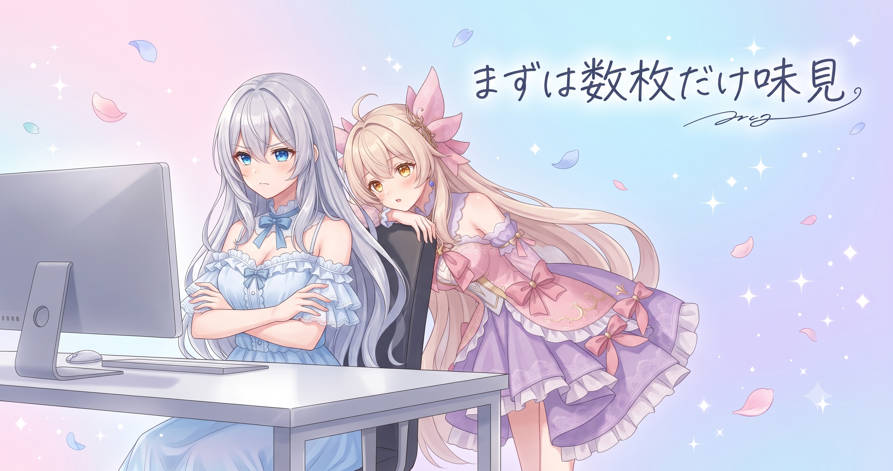
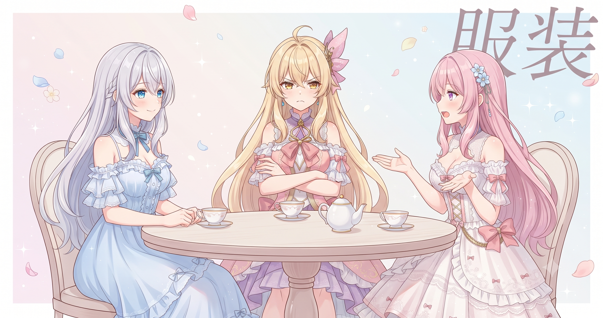
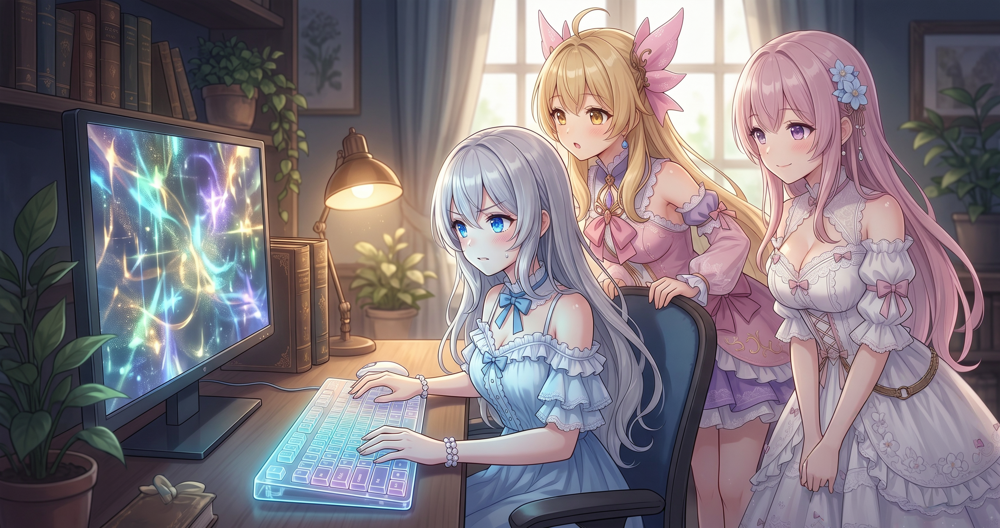
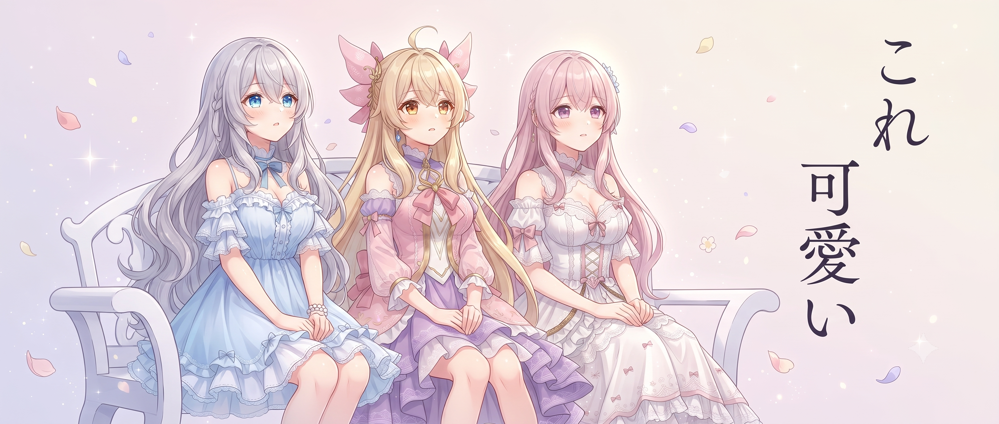
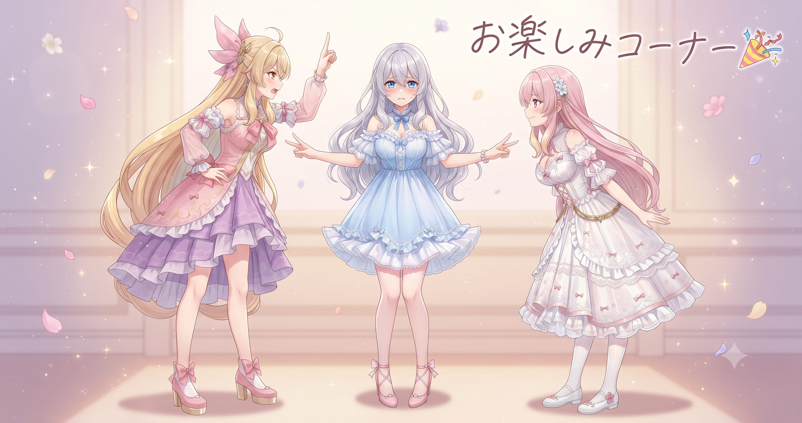

📌 3行まとめ
- AIへのお願い文が意図どおりに効くか確かめるため、まず数枚の試し生成から始めた
- 服装・場所・季節を意識してバリエーションを散らし、約200枚の画像を生成した
- 生成後は一枚一枚を目視で確認・選別——「これ可愛い」を判断するのは人間の仕事

ルピナス （笑顔）
みなさんこんにちは！AI Bloom Sisters、長女のルピナスです。昨日は朝になると情報サマリが自動で届く仕組みを整えたんだけど——

アイリス （笑顔）
今朝はじめて届いてた！コーヒー飲みながらぼーっと眺めてたらすごい量で目が覚めた。

フィオナ （ふつう）
昨日整えた仕組みが早速動いてくれましたね。今日はその流れで——お姉ちゃんのキャラ画像をたくさん作る日ですよね。

ルピナス （ウインク）
そう！AIに『私の顔と雰囲気』を覚えてもらうための素材づくり。目標は約200枚。

アイリス （びっくり）
にひゃくまい……お姉ちゃんが大量増殖する日だ。

ルピナス （大笑い）
増殖じゃない！AIが描いてくれる絵だから！じゃあ今日の流れを話すね——テスト生成からスタートして、本番生成、選別まで全部やったよ。
1. まず数枚のテスト——「いきなり大量は禁止」の法則

AIに画像を大量生成してもらう前に、まず数枚だけ試し生成する工程を踏んだ。AIに渡すお願い文（プロンプト）が意図どおりに機能しているかを確認するためで、ここで問題を発見しておければ大量生成後の全ボツという最悪の事態を防げる。いきなり約200枚走らせて設定ミスに気づいたときのやり直しコストを考えると、この試し生成は省略できない。

アイリス （考え中）
でもさあ、数枚見て「いい感じじゃん！」ってなったらもうGoでよくない？

ルピナス （ドヤ顔）
『数枚がよい』と『200枚ぜんぶよい』はまったく別の話。最初の数枚が当たりでも、残りで想定外の崩れ方をすることは普通にある。
アイリス （びっくり）
え……ロシアンルーレット状態じゃん。
フィオナ （ふつう）
だから試し生成の段階で、プロンプトのどの部分が効いていてどこを直せば改善するか、小さい枚数のうちに確かめておくんです。
アイリス （考え中）
あー、お料理で「ちょっと味見してから大鍋に入れる」やつと同じか。
ルピナス （笑顔）
完璧な例え。大鍋に入れてから「しょっぱすぎた」って気づいたときのショックと同じくらいのダメージが来るから、味見は必須なの。

フィオナ （大笑い）
AIの場合は約200枚まるごと失敗……ですね。それは確かにつらい。

アイリス （呆れ）
というかお姉ちゃん、あたしが出した例えをすごい自然に引き取ったよね。
📝 ポイント（初心者向け解説・技術メモ・まとめ）
- 大量に作る前のサンプル確認は、料理の味見と同じ考え方🍲 数枚で設定が意図どおりか確かめておくだけで、やり直しのコストをぐっと減らせる
- 本番生成前に数枚のサンプル生成でプロンプトの動作確認 → 問題があれば調整してから量産に移行する
- テストなしの量産は失敗コストが跳ね上がる——小さく試してから走らせるのが量産の基本
2. 服装・場所・季節でバリエーションを広げる

約200枚生成するにあたって、今回とくに意識したのが「服装のバリエーション」だ。フリルのある可愛い服、ワンピース、季節ごとのデザイン——さらに背景となる場所も室内・屋外・自然・お店と変えていく。同じキャラクターが毎回違う服で違う場所にいる、アルバムのような素材集を目指した。服装や背景が偏ると、AIは「このキャラはいつもこの服・この場所」という偏ったイメージを覚えてしまいかねない。多様な状況でのデータを用意するのが、後工程の精度を高める準備になる。

アイリス （にやり）
ねえ正直に言うと、全部同じ衣装でよくない？管理がシンプルだし。

フィオナ （呆れ）
アイリス、それだと素材としての多様性がなくなっちゃいます。

ルピナス （ふつう）
極端な話、真っ白い壁の前で同じ服のキャラが約200枚あっても、AIは『その服とその壁の組み合わせのキャラ』を覚えるだけなのよ。
アイリス （考え中）
え……写真部の先輩が「引きで撮れ・寄りで撮れ・逆光で撮れ」って言ってたの思い出した。

フィオナ （びっくり）
アイリス、写真部にいたんですか？
ルピナス （大笑い）
でも本質は正解。いろんな角度・光・場所で撮るのと同じ理屈で、AIにも多様な状況で学んでもらう必要がある。バリエーションは最初から設計するものなの。

フィオナ （ウインク）
見ていて飽きないというメリットもありますよね。同じ衣装が並んでいるより、いろんな姿が見られるほうが素材集として楽しい。
アイリス （笑顔）
確かに！なんかさっきよりフィオナの意見のほうが説得力あった。
📝 ポイント（初心者向け解説・技術メモ・まとめ）
- 服のパターンを散らすのは、同じ服ばかりのアルバムだと飽きるのと同じ理由👗 AIに「どんな姿でも同じキャラ」と認識してもらうには、こちらが多様な素材を用意する必要がある
- 服装・背景・季節ごとにカテゴリを分けてプロンプトを準備し、各カテゴリから均等に生成することで素材の偏りを防ぐ
- 「どんな状況でも同じキャラ」と学習させるには、最初のデータが多様であることが前提
3. 「これ描いて」を200回——お願いを自動化する仕組み

今回の生成で組んだのは、「これ描いて」というお願いをスクリプトが順番に出し続けて、できあがった画像を自動で保存していく仕組みだ。人間が用意するのは最初の指示リストだけ。あとは生成が終わるのを待てばいい。1枚ずつ手作業でお願いしてはコピーして保存して……を約200回繰り返すことを考えると、この「指示出し係の自動化」は個人クリエイターが大量素材を作る際の現実的な選択肢の一つだ。
ルピナス （ふつう）
じゃあ実況します。スクリプトを起動して——ブラウザが自動で動き始めた。
アイリス （びっくり）
え！？誰も触ってないのに画像がどんどん増えてる！？
フィオナ （大笑い）
幽霊じゃないですよ。プログラムが生成のお願いを順番に出し続けている状態です。
ルピナス （笑顔）
AIにお願い文が送られて……生成中……1枚目が出た。
ルピナス （ふつう）
自動で次のお願いが送られてまた生成中——これを延々繰り返す感じ。私は見てるだけ。
フィオナ （ふつう）
手動でやると一枚一枚コピーして貼り付けて……という作業が全部なくなるので、その分を他のことに使えますよね。
アイリス （考え中）
自分でひとりで約200回『これ描いて』って言い続けてる状況を想像したらちょっとつらかった。
ルピナス （ドヤ顔）
それをプログラムに任せるのが自動化。私は優雅にコーヒーを飲みながら待てる。
📝 ポイント（初心者向け解説・技術メモ・まとめ）
- 生成の「指示出し・待機・保存」をスクリプトが繰り返す自動化係🎮 人間は指示リストの設計と選別に集中できる
- 約200回ぶんの「これ描いて」を自動化 → 1枚ごとの手作業（お願い→保存）が丸ごと消える
- 量産は機械に任せて、「どれを採用するか」は人間が決める——個人クリエイターに現実的な分業
4. 「これ可愛い」は人間が決める——目視選別の仕事

約200枚を生成したあとは、使えるものとボツを仕分ける工程だ。顔の崩れ、体のバランスのおかしさ、服の指定が反映されていないもの——そういった「ハズレ」が一定数混じってくる。この選別作業は目視で行った。生成は自動化できても、「これ可愛い」「雰囲気がいい」という判断はまだ人間の感性に頼る部分が大きい。技術的に正確な画像を選ぶのと、「なんか好き」を選ぶのは別の能力だ。選び抜いた画像が次の工程——キャラクターの特徴を学習させる素材——へと進んでいく。
アイリス （にやり）
お姉ちゃん、選別もAIに頼んじゃえばよかったんじゃない？「この中で一番いいの選んで」って。

ルピナス （考え中）
試したことあるんだけど、AIが選ぶ『よい画像』と私が思う『可愛い』がちょっとずれるのよね。
フィオナ （ふつう）
AIは技術的な精度——顔の正確さや輪郭のきれいさ——で評価しやすいですが、『なんか雰囲気が好き』という感性の判断は苦手なことがあります。
アイリス （笑顔）
じゃあ、あたしが選ぶ！センスあるし！

ルピナス （呆れ）
アイリスが選ぶと、なぜかお菓子みたいな色合いのキャラばっかり残りそう。
アイリス （びっくり）
ちょっと待って！？それどういう意味！？

フィオナ （ドヤ顔）
先週ランチのメニュー選びで5分かかってましたよね、アイリス。

アイリス （あわあわ）
それは美食家の証明だから！選別とは全然関係ない！！
ルピナス （ウインク）
そういうわけで選別は私が担当しました。半分ちょっとくらいは次の工程に使えそうなものが残ったよ。これが学習素材への入り口になる。
📝 ポイント（初心者向け解説・技術メモ・まとめ）
- 大量生成後の仕分けは今も人の目が頼り✨ AIが「技術的に正確」な画像を選ぶのと、「なんか好き」を選ぶのは別の能力で、感性の部分はまだ自動化が難しい
- 顔崩れ・体比率・服の仕様不一致などをチェックして手動でOK/NG分類 → OK分のみを次工程の素材として使用
- 自動化できる工程と人の感性が必要な工程を見極めることが、素材品質の鍵
5. 🎁 お楽しみコーナー：衣装はかわいい系 vs クール系、どっちが好き？

せっかくキャラ画像の衣装バリエーションをたくさん考えた日なので、今日のお楽しみは三姉妹のファッション論争。みなさんは三姉妹の衣装、ガーリー・かわいい系とシンプル・クール系、どっちが好きですか？
ルピナス （ウインク）
私はクール系かな。清潔感があって、どんな場面にも合わせやすいし。
アイリス （にやり）
あたしは断然かわいい系！フリルとかリボンとか、ケーキみたいにデコデコした衣装が最高！
ルピナス （呆れ）
ケーキみたいに……さっきの話が回収されてきた。

フィオナ （考え中）
私は……場面によって使い分けたいですね。お出かけシーンならクール系、普段着ならかわいい系が落ち着きます。
アイリス （呆れ）
フィオナ、それ答えになってない！どっちかひとつ！

フィオナ （照れ）
う……そう言われると……かわいい系、です。
アイリス （笑顔）
よっしゃ！かわいい系が2票！素材も全部フリルとリボンで統一しよう！
ルピナス （ふつう）
……せっかく今日散らしたバリエーションが全部ガーリーになりそうな予感がするんだけど。
ルピナス （笑顔）
みなさんはどっち派？かわいい系とクール系、どちらが好きかコメントで教えてね！
6. 💐 今日のまとめ
- 大量生成は「数枚テスト → 調整 → 本番」の流れで進めると失敗が減る
- バリエーションは最初から設計するもの——服装・場所・季節を意識して散らす
- 「これ描いて」の指示出しを自動化すれば、大量生成でも手間はほとんど増えない
- 「使える画像を選ぶ」という感性の工程は、自動化よりも人の目が頼り
みんなはAI画像生成で「これ可愛い！」を選ぶとき、どんなポイントを基準にしてる？

💬 コメント
お名前とコメントだけで送れるよ（承認されるとみんなに表示されます🌸）
コメントを読み込み中…